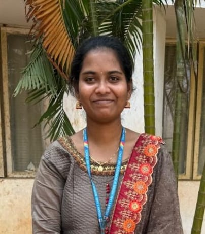

Ummaneni Naga Pravallika

Summary
BTech AIML student at Vignan Lara Institute of Technology and Science, passionate about AI, ML, and Web Technologies. Skilled in problem-solving, logical thinking, and web development. Completed a Web Development internship at Prodigy InfoTech, gaining hands-on experience. Strong in team collaboration, time management, and innovation.
Education
- B.Tech in Artificial Intelligence & Machine Learning
- Vignan's Lara Institute of Technology and Science
- Currently Pursuing (2022-2026 Expected)
- Intermediate
- Sri Chaitanya College
- 2020-2022
- Secondary Education (10th Grade)
- Presidency High School
- 2019-2020
Work Experience
Summer Internship
- Pragmatiq Solutions (May 2024 - July 2024)
- Developed a machine learning model for IPL Winner Prediction using Python and Scikit-Learn.
Virtual Internship
- Prodigy InfoTech (June 2024 - July 2024)
- Developed and designed responsive web applications using HTML, CSS, JavaScript.
Certificates
- Basics of Python (Issued by: Onwingspan, February 2025)
- Successfully completed a course on Python fundamentals, covering syntax, data structures, and basic programming concepts.
Technical Skills
Others